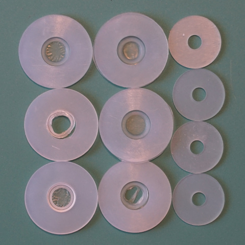
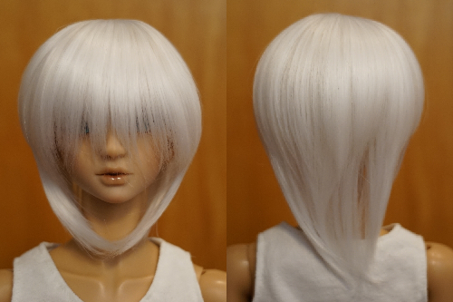
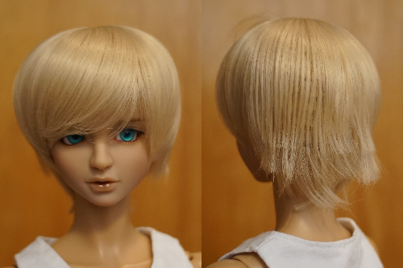

I made the order for the KIPS because I could not afford to buy 4 more packs for $10 each. Only 2 large KIPS are included per pack. This is not enough for one 1/3 doll! They are used in both shoulders and the neck.
I threw some face masks in because I apparently am a pro at losing them and only have a couple in each size. I have heard good things about Msire wigs so I decided to try two of those as well to hit free shipping.
I made it to the payment page and groaned when I saw that a paypal fee is included in every order. I weighed my options and checked out NCS. New Clover Singing has them for $3 each instead of 50 cents each. I groaned some more and made my order.
I ordered:
My dumb butt realized on 7/14 that I ordered the smaller 1/3 size of WMS012 that probably would not fit Liam. I emailed immediately asking for a size change. This size was available for purchase on the site at the time, but the manufacturer said it was no longer available in that size. I was asked again and changed color to blonde in the correct size.
My order was shipped on 7/21 and arrived 8/2.
Order bonuses: 2 large kips (a total of 12) and 1 melamine sponge.
The silicone discs do not have their centers cut out. This is a 5 second fix for me with a xacto knife, but may not be for you. They are not as cleanly made as Volks KIPS, but are nearly the same for a much cheaper price. I'd definitely buy these over Volks KIPS any day.
AC silicone discs (large) and Volks KIPS (medium)
Face masks were face masks. Nothing notable to say. They seem a little more elongated than the picture.
WMS033 White looks as expected. The white fibers are soft and matte.
WMS012 Blond is cute from the front. The fibers are also nice on this one! Unfortunately the behind looks like... this....
Yes, the wefting is visible too!
I luckily was in a good mood and had a good laugh at it. This was the day I decided to try trimming doll wigs again.
I was urged by a DoA user to contact Alice about this wig, so I sent her a photo of the front and back with my concerns. She messaged MSire and got back to me the next morning.
"Our wig maker said the wig and the cut is normal, please comb the hairs more evenly so that the wefts won't show so much, and then you can use your hands to style the wig, our wig maker said light-color wigs' wefts could be seen more or less."
And with that, I will not recommend MSiredoll wigs despite their nice fibers!